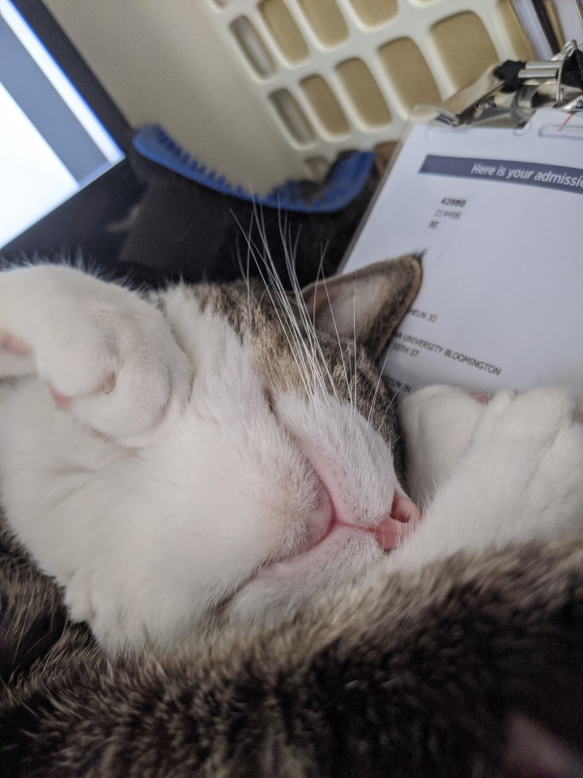

Research
My research is focused on machine learning and deep learning methods on medical images
Skull stripping
Many of the current deep learning methods for skull stripping(segmenting the brain region from a medical image of a head) is focused on one modality. Our goal is to find an architecture that would work on multi modalities(e.g. T1 and T2 images). This could also be extended to a more general segmentation approach, including major organs in CT images and brain tumor.
Collaborations
I'm currently looking for collaborations I could do. Anyone interested in applying AI to brain or any type of medical images/data, please feel free to contact me.
Picture of my cat
These are pictures of my cat so that this blank space can be used for a better purpose than just being empty


- 